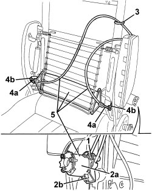
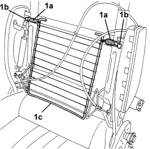

7045A38 DRIVER'S SEAT BACKREST LUMBAR ADJUSTMENT DEVICE - R.R WITH SEAT REMOVED
- Path
- Procedures > 70 FITTINGS > 7045 FRONT SEATS > 7045A FRONT SEAT ASSEMBLY > 7045A38 DRIVER'S SEAT BACKREST LUMBAR ADJUSTMENT DEVICE - R.R WITH SEAT REMOVED
- Kind
- repair procedure (removal / refitting; the operation number is the code)
- Applies to
- all engines; all production periods
- Interactive page
- https://sloeber94.github.io/elrnDB/alfa/159/en/#/939011293
Applies to: all engines; all production periods
 Removing
Removing
 Refitting
RefittingOp. 7045B10 FRONT SEAT HEAD RESTRAINT, LEFT OR RIGHT - R.R.
Op. 7045B06 GUIDE BUSH FOR FRONT SEAT HEAD RESTRAINT (ONE), LEFT OR RIGHT - R.R.
Op. 7045A25 FRONT SEAT BACKREST LUMBAR ADJUSTMENT KNOB (ONE), LEFT OR RIGHT - R.R.
Op. 7045D30 FRONT SEAT BACKREST COVER, LEFT OR RIGHT - R.R.
1. Undo the bolt.
2. Move the control terminal of lumbar adjustment device (2a) by releasing retainer (2b).
3. Cut the band.
4. Open retainers (4a) slightly and release control cable terminals (4b).
5. Remove the lumbar adjustment device.

Applies to: all engines; all production periods
1. If necessary, disconnect springs (1a) from retainers (1b) and remove lumbar grille (1c).

Applies to: all engines; all production periods
Refitting
Removing- Check that the lumbar adjustment device is not damaged.
- If removed, position the lumbar grille and connect the springs to the retainers.
- Position the lumbar adjustment device.
- Position the control cable terminals in their seat and do up the retainers.
- Apply the band.
- Fit the lumbar adjustment device control terminal in its seat by doing up the retainer, then secure with the bolt.
Op. 7045D30 FRONT SEAT BACKREST COVER, LEFT OR RIGHT - R.R.
Op. 7045A25 FRONT SEAT BACKREST LUMBAR ADJUSTMENT KNOB (ONE), LEFT OR RIGHT - R.R.
Op. 7045B06 GUIDE BUSH FOR FRONT SEAT HEAD RESTRAINT (ONE), LEFT OR RIGHT - R.R.
Topics linked from this page (4)
- 7045A25 FRONT SEAT BACKREST LUMBAR ADJUSTMENT KNOB (ONE), LEFT OR RIGHT - R.R.
- 7045B06 GUIDE BUSH FOR FRONT SEAT HEAD RESTRAINT (ONE), LEFT OR RIGHT - R.R.
- 7045B10 FRONT SEAT HEAD RESTRAINT, LEFT OR RIGHT - R.R.
- 7045D30 FRONT SEAT BACKREST COVER, LEFT OR RIGHT - R.R.